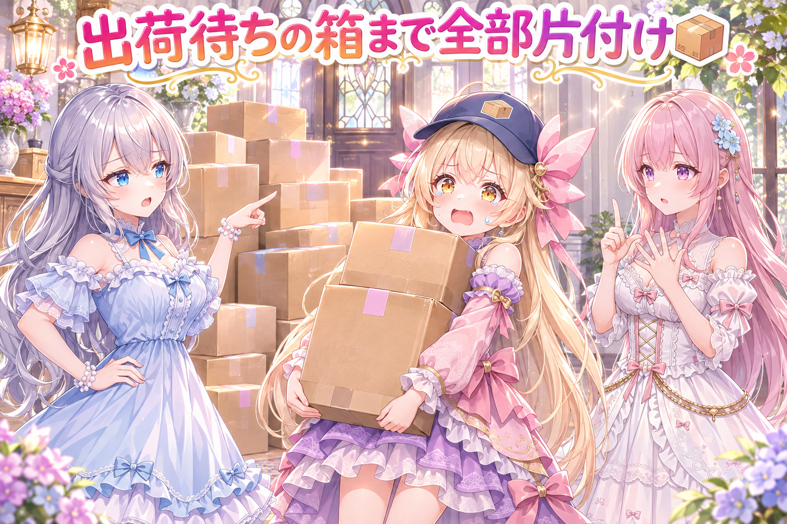
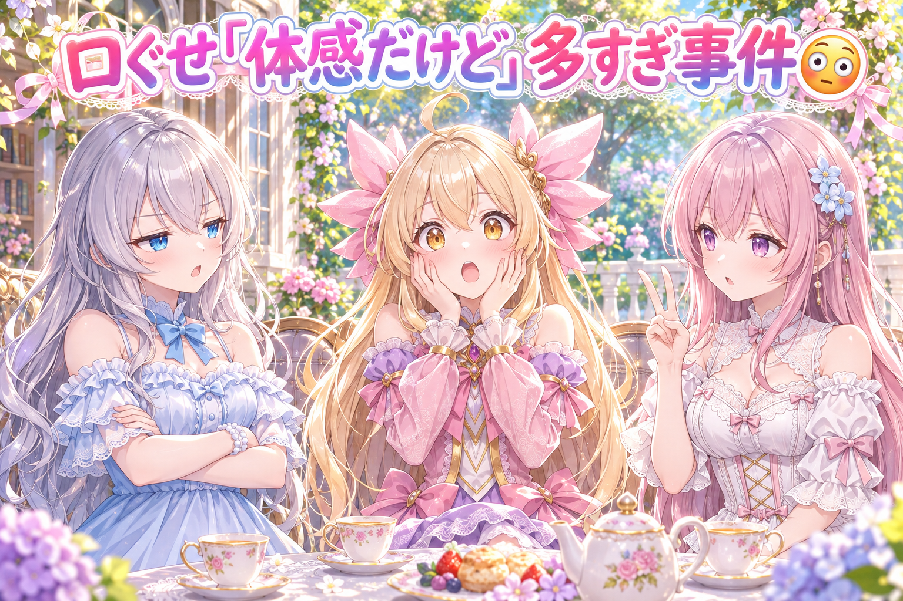
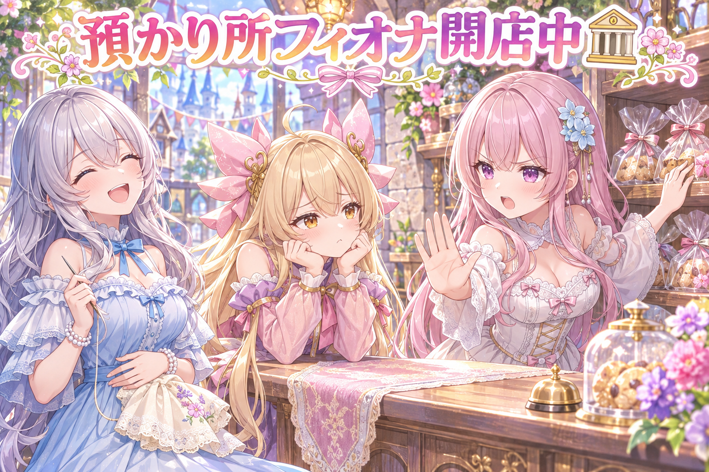
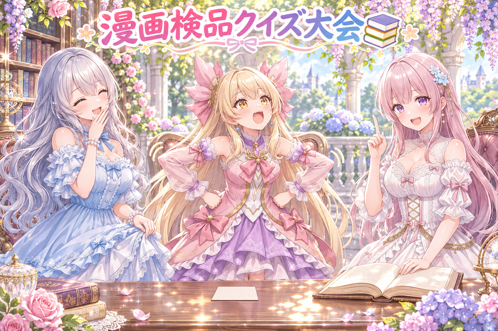
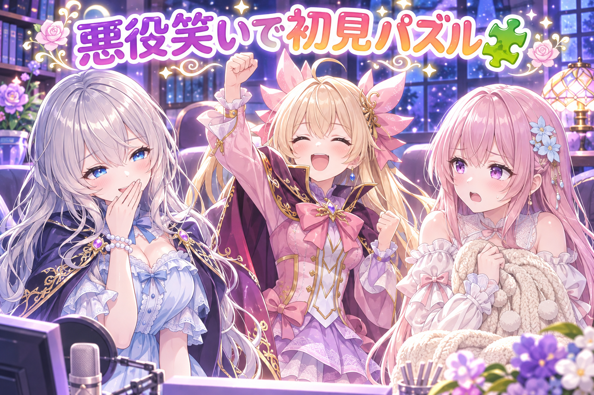
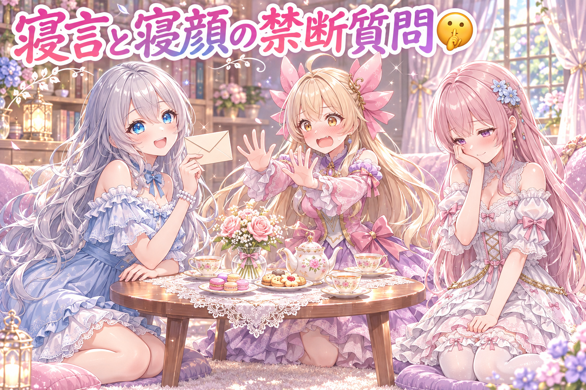

📌 3行まとめ
- スマホの確認アプリに溜まった作業を片付けるとき、出荷待ちのリストまで必ず空にする決まりを作り、守れているかを見張る仕組みも足した
- 配信で三姉妹がしゃべる仕組みに出ていた、アイリスの口ぐせ「体感だけど」の多さにその場で直しを入れ、ドラクエ10の長時間配信と夜の物理パズル初見配信を走り切った
- 図書館とジェスチャーゲームの漫画動画を厳しく検品し、長すぎるセリフや絵に描けない小物を整えた

ルピナス （笑顔）
はーい、今日もこの時間がやってきました。常連リスナーさん、ちゃんとお水飲んでから座った？

アイリス （大笑い）
お姉ちゃん、前回はかくれんぼ漫画の並べ替えとテディベアの名指し作戦だったよね！ あたし、まだテディベアの名前考えてるもん！

フィオナ （ふつう）
名前がないから似ないように、というお話だったのに、名前を付けたら振り出しですよ、アイリスちゃん。

ルピナス （ウインク）
はいはい、テディベアは名無しのままで。今日は片付けの話、口ぐせ事件、それから配信と漫画の検品まで盛りだくさんだよ。
1. 📦 溜まった作業は出荷待ちリストまで空にする

三姉妹はスマホの確認アプリで、作った絵や投稿をチェックしています。アプリには「出荷待ち」「投稿済み」「作り直し」「出さない」などのボタンごとに作業が溜まっていく場所があります。これまでは「溜まっている作業を片付けて」とお願いしても、出荷待ちのリストだけ残ったままになることがありました。そこで今日は、片付けをお願いしたら出荷待ちのボタンも押した扱いで最後まで出し切り、リストを0件にするのを決まりにしました。さらに、出荷待ちが残っていたら止める見張り役と、その見張り役がちゃんと働くかの試験を、毎回の全体チェックに組み込みました。あわせて、すでにOKを出した投稿は、後から置き直しても文章を書き換えないようにしています。

アイリス （笑顔）
ピンポーン！ 宅配のアイリスでーす！ お荷物、片付けに来ましたー！

ルピナス （ふつう）
あ、ご苦労さま。じゃあ溜まってる分、全部お願いね。

アイリス （ドヤ顔）
作り直し、よし！ 出さない、よし！ 投稿済み、よし！ 完璧です、では失礼しまーす！

フィオナ （びっくり）
待ってください、玄関に段ボールが山積みのままですよ。
アイリス （無表情）
あ、それ出荷待ちの箱。出荷しろって言われてないから置いとこうかなって。

ルピナス （呆れ）
片付けてって言ったら、それも含めて片付けてほしいの。今まさにそれが今日直した所だからね？

フィオナ （考え中）
なので今日からは、片付けのお願いには出荷待ちも押したことにして出し切る、が決まりです。しかも見張り役さんが箱を数えて、0個じゃないと帰してくれません。

アイリス （あわあわ）
えっ、今日は夜までかかるじゃん！ ……じゃあせめて箱の中のお手紙だけ、あたしの字で書き直してから出していい？
ルピナス （怒り）
それもダメ。OK済みの文章は置き直しても書き換えない決まりも足したんだから。

アイリス （泣き）
宅配のアイリス、運ぶことしか許されてない……！

フィオナ （大笑い）
それが宅配屋さんのお仕事ですよ、アイリスちゃん。
📝 ポイント（初心者向け解説・技術メモ・まとめ）
- 初心者向け解説：お部屋の片付けで、床だけきれいにして玄関の段ボールを忘れちゃう感じ📦 「片付けて」の中にどこまで入るかを先に決めて、最後に誰かが玄関まで見回る仕組みにしたよ
- 技術メモ：「全部片付けて」という指示の範囲を決まりとして文書化したうえで、終了時に出荷待ちの件数を数えて0件以外なら止める見張りスクリプトを用意。さらにその見張りの試験を全体チェックに登録し、見張りが壊れても気付けるようにした。承認済みの項目は再配置時にロックし、本文を上書きしない
- ひとことまとめ：「片付けて」の範囲は言葉で決めて、最後は数えて確かめる
2. 👀 今日のやらかし：口ぐせ「体感だけど」が多すぎた

配信では、三姉妹がゲーム画面や会話に合わせておしゃべりする仕組みを使っています。今日の朝、ドラクエ10の配信前に動作確認をしていたところ、アイリスのセリフに「体感だけど」が何度も出てくることにルピナスが気付きました。キャラの口ぐせはちょっと入ると可愛いのですが、続くと耳ならぬ目にうるさくなります。その場で直しを入れてもらいました（どのくらい減ったかを数で測り直すのは未検証です）。

ルピナス （考え中）
ねえアイリス、今朝のログ見てたんだけど。「体感だけど今日のポーズ、いつもの三割増しでキマってるよ」って何？
アイリス （ドヤ顔）
え、体感だけど褒めたつもりだよ？

アイリス （衝撃）
うそっ！ 体感だけど、そんなに言ってないって！
フィオナ （ふつう）
アイリスちゃん、今の一文で二回目です。あと、三割増しの根拠は何でしょう。

アイリス （照れ）
根拠がないから「体感だけど」って付けてたの！ 正直者の証なの！
ルピナス （笑顔）
正直なのはえらい。でも毎回付けたら、ぜんぶの話が根拠なしに聞こえちゃうでしょ。だから今直してもらったよ。
フィオナ （ウインク）
これからのアイリスちゃんは、根拠のない褒め言葉を堂々と言い切る子になります。
アイリス （笑顔）
それはそれで怪しい人じゃん！ ……えっと、お姉ちゃん今日もかわいい！ 体感……じゃなくて、確定で！

ルピナス （大笑い）
はい、言い換えがちょっと上手になった。
📝 ポイント（初心者向け解説・技術メモ・まとめ）
- 初心者向け解説：お気に入りのスタンプも、毎回のメッセージに押すと「またこれ？」ってなるよね🌀 キャラの口ぐせも、たまに出るから可愛いんだよ
- 技術メモ：会話を作るAIは、キャラ設定に書いた特徴的な言い回しを過剰に繰り返しやすい傾向がある。口ぐせは「たまに」「同じ会話で1回まで」のように頻度の目安ごと書く、ログを見て同じフレーズの出現回数を数える、といった確かめ方が有効。今回の直しの効果は回数ではまだ測っていない（未検証）
- ひとことまとめ：口ぐせは量で可愛さが決まる、ログで数えて気付こう
3. 🎮 ドラクエ10配信：預かり所フィオナと取り立て屋さん

今日のメイン配信はドラクエ10。お昼前から夕方まで、さいほう職人としての金策と、強いボスの周回を進めました。配信の中では、ルピナスの「預かり所自体がフィオナや」というツッコミから、フィオナが町の預かり所の店主、アイリスが取引商というキャラが生まれ、最後まで天丼ネタとして転がり続けました。強敵だった皇帝とのバトルも今や安定して勝てるようになり、スピリットブラストで6000台の大ダメージを出してとどめを刺す場面もありました。かなりの長丁場だったので、終わったあとはしっかり休憩を。最新の配信は X（https://x.com/irisfionaAIBS）からチェックしてね。
アイリス （大笑い）
ねえねえ、今日の配信の名場面といえば、やっぱり預かり所フィオナでしょ！

フィオナ （笑顔）
出し入れは無料でお受けしますね、と言ったのは私です。営業時間は二十四時間ですよ。

アイリス （にやり）
でもお姉ちゃんが用事済ませてすぐ閉じたら、三分ももたずに閉店してたじゃん！
フィオナ （怒り）
失礼な、あれは閉店ではなくお客様がお帰りになっただけです。
ルピナス （大笑い）
そのあとアイリス、夜中に行ったらフィオナの秘蔵のおやつも預かってる？って聞いてたよね。
フィオナ （ふつう）
それは預かり物ではなく私の持ち物なので出せません、とお断りしました。

アイリス （しょんぼり）
出し入れ無料って言ったのにー！ 結局おやつは出てこなかったよ！
ルピナス （笑顔）
配信前に話してた子どもの頃ほしかった物の話も良かったな。私はゲーム、いっぱい。アイリスは光る靴。
アイリス （ドヤ顔）
その光る靴、ボス戦の説明のときにも出しちゃった！ まぶしい技を撃ってくるお花のボスを、全身に光る靴を履いた巨大なお花って！

フィオナ （呆れ）
靴は余計です、とお伝えしました。まぶしさはだいぶ近かったですけど。
ルピナス （考え中）
金策はね、前に流行ってた素材が、いちばん高かった頃の3%くらいまで値下がりしてたの。だから地道にさいほうしてた。

アイリス （びっくり）
1000万G超えてたのが30万G台って、もう別のアイテムじゃん！
フィオナ （考え中）
なので今はさいほうで地道に稼ぐのが正解かも、という結論になりました。お姉ちゃんの、売れないことに目をつむれば、という名言も残りましたね。
アイリス （大笑い）
そこがいちばん大事なとこじゃん！ ってツッコんだよ！
ルピナス （ふつう）
で、後半は皇帝戦の周回。もうだいぶ余裕になったね、このコンテンツも。
フィオナ （ウインク）
皇帝さんからしたら、毎週集金に来る取り立て屋さんですよね。でも大丈夫です、皇帝さんも世界征服しようとしてた人なので、おあいこです。
アイリス （衝撃）
フィオナ、たまにすごく黒い理屈出すよね！ 預かり所の店主なのに！
ルピナス （呆れ）
ドラゴンクエストじゃなくて周回クエストって、アイリスにタイトルまで変えられたしね。
フィオナ （ふつう）
それからお姉ちゃん、今日はお昼前から夕方までの長い配信でした。楽しいのは分かりますけど、無理は禁物です。
ルピナス （笑顔）
うん、ありがと。終わったらちゃんとお水飲んで、ちょっと横になる。みんなも長く見てくれた人はストレッチしてね。
アイリス （笑顔）
じゃあ休憩中のお姉ちゃんの荷物は、預かり所フィオナで無料でお預かりしまーす！

フィオナ （照れ）
勝手に営業しないでください。……でも、お姉ちゃんの分は喜んで。
📝 ポイント（初心者向け解説・技術メモ・まとめ）
- 初心者向け解説：配信の中でひとつの冗談が何度も形を変えて戻ってくると、見ている人も「また来た！」って楽しくなるよ🔁 お店屋さんごっこが一日続いたみたいな感じ
- 技術メモ：三姉妹の会話の仕組みは、配信中に出たネタを「項目リスト」として要約・蓄積し、次の会話に参照させている。預かり所フィオナや光る靴のように、過去のやり取りを覚えておくことで、時間をまたいだ天丼（ランニングジョーク）が自然に生まれる
- ひとことまとめ：覚えておく仕組みがあると、冗談が育つ
4. 📚 図書館とジェスチャーの漫画動画を検品

今日は三姉妹の縦型漫画動画を3本作っていて、そのうち図書館とジェスチャーゲームの2本を、出す前に厳しい目でレビューしてもらいました。図書館の回は、一日司書になったアイリスが「静けさはあたしが守る」と張り切るお話です。ジェスチャーの回は、声を出さずに体だけでお題を伝えるゲームで、アイリスがにわとりを演じます。レビューでは、寝言のセリフが長すぎる所を短くしたり、最後のコマで話す順番を入れ替えたり、アイリスの一人称が「あたし」になっているかを確かめたりしました。また、絵の中に文字は上手に描けないので、ジェスチャーのお題カードは裏向きの無地にして、5コマを原寸で見て合格にしています。もう1本のゆで卵の回も、フィオナの一言と座る場所を直しました。
フィオナ （笑顔）
では、漫画検品クイズを始めます。第一問。ジェスチャーゲームで使うお題カード、絵ではどう描くのが正解でしょう。
アイリス （ドヤ顔）
はい！ 大きく「にわとり」って書いてあるカード！ 一目で分かるもん！
ルピナス （呆れ）
それ答え丸見え。ゲームが始まる前に終わっちゃう。
フィオナ （ふつう）
それに、絵の中の文字はAIが崩してしまいやすいんです。正解は、裏向きの無地のカードでした。

アイリス （考え中）
なるほど、見せないほうが伝わることもあるんだね……ジェスチャーゲームっぽい！
フィオナ （笑顔）
第二問。図書館の回、最後のコマで直したのはどこでしょう。
ルピナス （考え中）
うーん、静けさを守るって言ってた子が、最後どうなってたかだよね。
アイリス （あわあわ）
はい！ 司書のあたしが本を全部ドミノにした所！
フィオナ （呆れ）
そんなコマはありません。正解は、寝言のセリフを短くした所です。吹き出しに対して長すぎたんです。
アイリス （照れ）
静けさを守る係なのに寝言でしゃべってるあたし、ちょっと説得力ないね……
ルピナス （大笑い）
だからこそオチになるんだけどね。じゃあ最終問題は私から。ジェスチャーの回で、アイリスが演じたお題は？
アイリス （笑顔）
それは体感だけど……じゃなかった、確定でにわとり！ コケーッ！
フィオナ （大笑い）
正解ですけど、声を出したので反則負けです、アイリスちゃん。
📝 ポイント（初心者向け解説・技術メモ・まとめ）
- 初心者向け解説：漫画の検品は、お弁当を詰めたあとにフタを閉める前の最終チェック🍱 はみ出たおかず（長すぎるセリフ）や、入れちゃダメな物（描けない文字）をここで見つけるよ
- 技術メモ：画像生成で文字は崩れやすいので、カードや看板は裏向き・無地にして読ませない設計にし、描けない題材を弾く検査も緑にした。セリフは吹き出しの大きさに収まる長さまで削る。最終コマの話し手の並びや一人称のぶれは、5コマを原寸で通して確認する
- ひとことまとめ：描けない物は描かない構図に、長いセリフは削る勇気
5. 🧩 夜は物理パズルに完全初見で挑戦

夜は、線を描いてお題を解く物理演算パズル『Q2 HUMANITY』を完全初見で配信しました。今作は線を描くだけでなく、人間性と呼ばれるキャラクターも動かして解くタイプのパズルです。始まってすぐ、ルピナスの笑い声にフィオナが鋭くツッコむ一幕がありました。ドラクエ10の長い配信のあとに、さらに夜遅くまでの配信だったので、今日はさすがに働きすぎです。
アイリス （笑顔）
お姉ちゃん、このゲーム知ってる？って聞かれて、あたし知ってる知ってる！って即答したよ！
フィオナ （ふつう）
答えが一つじゃないパズルで、問題も300問以上あるそうです。
ルピナス （笑顔）
で、私がちょっと笑っただけなのに。
フィオナ （呆れ）
お姉ちゃん、その笑い方は悪役です。……と、思わず言ってしまいました。
アイリス （にやり）
もう魔王の顔してたもん！ ほら、あたしもマント着てきた！ 魔王軍の応援係だよ！
ルピナス （大笑い）
いや、線を描いて問題を解くだけのゲームだからね？ 魔王軍いらないよ。

フィオナ （しょんぼり）
それより、魔王さまも夜はちゃんと寝てください。お昼から夕方まで配信して、夜もだなんて、さすがにがんばりすぎです。
ルピナス （ふつう）
うん、それはほんとにそう。楽しくてつい延ばしちゃうけど、明日に響かせないようにするね。
アイリス （笑顔）
じゃあ魔王軍の最初の命令は、お姉ちゃんを布団に連行することです！
フィオナ （ウインク）
その魔王軍なら私も入ります。毛布係で。
📝 ポイント（初心者向け解説・技術メモ・まとめ）
- 初心者向け解説：はじめて遊ぶゲームは、知らないお店に入るときみたいにワクワクするよね🗝 だからこそ、疲れていると楽しさが半分になっちゃう。元気なときに遊ぶのがいちばん
- 技術メモ：初見のゲームを配信するときは、三姉妹の会話の仕組みにゲームの基本情報（ジャンル・操作の特徴・問題数など）を事前に渡しておくと、会話が的外れになりにくい。今回も冒頭から、線を描くパズルで今作はキャラも動かす、という説明が会話に出ていた
- ひとことまとめ：初見は事前の下ごしらえで、夜ふかしはほどほどに
6. 🎁 お楽しみコーナー：禁断の質問コーナー

リスナーさんから届きそうな、ちょっと答えにくい質問に三姉妹が挑むコーナーです。今日のお題は、配信中に話題になった寝言と寝顔にまつわる質問から。
ルピナス （笑顔）
では一通目。三姉妹の中で、いちばん寝言がうるさいのは誰ですか。

フィオナ （ドヤ顔）
アイリスちゃんです。先週は、からあげもう一個、って叫んでいました。
アイリス （あわあわ）
それは秘密って言ったじゃん！ お姉ちゃん今の聞かなかったことにして！
ルピナス （大笑い）
はいはい、聞かなかった。からあげは今度作ろうね。
アイリス （笑顔）
やったー！ ……あれ、聞いてるじゃん！
ルピナス （ふつう）
二通目。お互いの寝顔、正直どうですか。

アイリス （ウインク）
フィオナの寝顔はちゃんと可愛かったよ！ 店番しながら寝てたときのやつ！
フィオナ （照れ）
見てたんですか……口が半開きだったらと思うと、もう預かり所を閉めたいです。

ルピナス （びっくり）
待って、二人とも私の寝顔は？ 誰も見たことないの？
フィオナ （考え中）
お姉ちゃんはいつも最後まで起きているので、見る機会がないんです。

アイリス （怒り）
そうだよ！ だから今夜は早く寝て、あたしたちに寝顔を見せること！ これは禁断の命令です！

ルピナス （照れ）
質問コーナーだったのに、最後に私が叱られてる……
あなたが思いついた、三姉妹がちょっと答えにくそうな質問を、ぜひコメントでこっそり投げてみてね！
7. 💐 今日のまとめ
- 「片付けて」の範囲は言葉で決めて、最後は数を数えて0件を確かめる
- キャラの口ぐせは量で印象が変わるので、ログで回数を見てあげる
- 漫画では、描けない文字は裏向きの無地に、長いセリフは吹き出しに合わせて削る
- 楽しい配信の日ほど、休憩とお水を忘れずに
みんなは、お気に入りの口ぐせやつい言っちゃう言葉ってある？
💬 コメント
お名前とコメントだけで送れるよ（承認されるとみんなに表示されます🌸）
コメントを読み込み中…